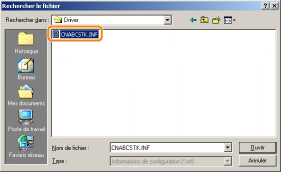

1
Branchez le câble USB.
2
Allumez l'imprimante.

3
Allumez l'ordinateur, puis connectez-vous sous Windows en tant qu'utilisateur avec privilèges d'administrateur.
|
→
|
L'écran d'installation automatique par Plug-and-Play s'affiche.
|
 Si le pilote d'imprimante est installé automatiquement Si le pilote d'imprimante est installé automatiquementSi vous avez déjà installé le pilote de cette imprimante, l'installation du pilote est automatique.
Pour mettre à jour le pilote d'imprimante (ou l'installer manuellement), désinstallez le pilote existant avant d'effectuer l'installation.
Si l'écran suivant apparaîtVous risquez de ne pas pouvoir installer correctement le pilote d'imprimante en raison de restrictions Windows, même après détection de l'imprimante par Plug-and-Play. Cliquez sur [Fermer], puis réinstallez le pilote d'imprimante (reportez-vous à "Installation facile").
|
4
Suivez les instructions à l'écran pour installer le pilote d'imprimante.
|
REMARQUE
|
||
|
Sélection du fichier ou dossier où est stocké le pilote d'imprimante.
Sélectionnez l'un des fichiers et dossiers suivants.
 Sélectionnez le fichier [CNABCSTK.INF] dans le dossier [French] - [32bit] - [Driver] du CD-ROM fourni.
     Pour un système d'exploitation 32 bits
Sélectionnez le dossier suivant du CD-ROM fourni : [French] - [32bit] - [Driver].
Pour un système d'exploitation 64 bits
Sélectionnez le dossier suivant du CD-ROM fourni : [French] - [x64] - [Driver].
Si l'écran de choix du pilote d'imprimante s'affiche
Peu importe le pilote d'imprimante sélectionné, cela ne pose aucun problème d'installation car le programme installe le même pilote d'imprimante.
|
|
A l'issue de l'installation, une icône et un dossier sont créés pour cette imprimante.
 "Après l'installation" "Après l'installation" |